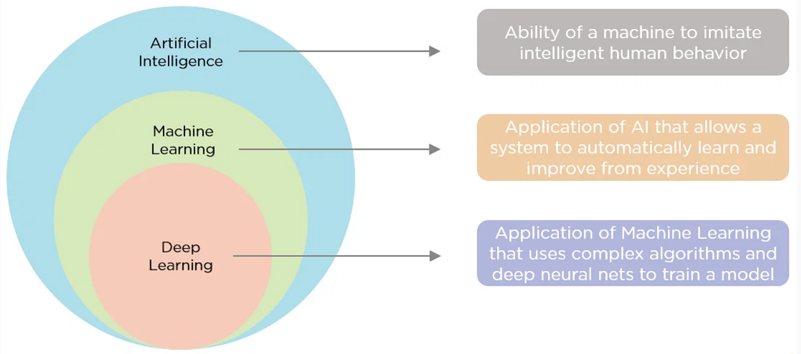

Scientific Machine Learning (SciML)#
Krishna Kumar
Scientific Machine Learning (SciML) represents a multi-disciplinary approach that fuses the physical laws governing a system (such as equations from physics or engineering) with data-driven machine learning methodologies. SciML uses domain knowledge to design appropriate machine-learning models for different scientific challenges. This domain expertise helps select relevant features, appropriate model architectures, useful validation metrics, etc. SciML exploits structure in scientific data like symmetries and conservation laws to develop more suitable machine learning techniques. For example, physics-informed neural networks incorporate physical principles into their design of loss functions. SciML research also includes extracting fundamental laws or PDEs from neural networks by observing system behavior.
Key Concepts#
Modeling and Simulation: SciML allows for integrating physics-based models with ML algorithms. This combination enables more accurate simulations and predictions, primarily when the physics of a system is partially known or complex to model explicitly.
Data Efficiency: By incorporating scientific knowledge, SciML techniques can require less data to make accurate predictions when collecting large amounts of data is expensive or impractical.
Interpretability: SciML often provides more insight into the underlying system’s behavior than traditional black-box machine learning models. Engineers can leverage this understanding to design and optimize systems more effectively.
Optimization and Control: SciML is utilized in optimization and control processes, where it can handle complex problems with various constraints and objectives, guided by both data and underlying physical principles.
Domains of Application: SciML has found applications in various engineering fields, including but not limited to mechanical engineering, electrical engineering, chemical engineering, environmental engineering, and more.
Many modern software packages and platforms now offer tools explicitly designed for SciML, like TensorFlow, PyTorch, and Julia’s SciML ecosystem. These frameworks allow engineers to harness the power of SciML without necessarily being experts in machine learning.
AI/ML/DL#
AI (Artificial Intelligence) refers to the broader concept of machines being able to carry out tasks that require human-like intelligence and cognition. AI encompasses various techniques like machine learning, deep Learning, knowledge representation, logic, planning, etc.
ML (Machine Learning) is a subset of AI that focuses on algorithms that can learn from data to make predictions, classifications or decisions without being explicitly programmed. Popular ML techniques include regression, decision trees, random forests, clustering, neural networks, etc.
Deep Learning is a specialized branch of ML that uses multi-layered artificial neural networks to extract higher-level features and patterns from raw data. It imitates how the human brain processes information. The additional neural network layers enable learning more complex features and concepts.
Some key differences:
AI is the broader parent field encompassing a variety of approaches, while ML and Deep Learning are specific disciplines within AI.
ML focuses on general-purpose algorithms to uncover insights from data, while Deep Learning uses multilayer neural nets for advanced learning capabilities.
ML relies greatly on feature engineering, while Deep Learning performs automated feature extraction. Deep Learning models are ML models that substantially improve performance on complex tasks like computer vision, speech recognition, and natural language processing.
Deep Learning requires massive datasets and significant computing power, while some ML techniques can work with smaller data.
In summary, Deep Learning is a state-of-the-art ML technique for many problems, while ML and AI represent the field dedicated to achieving artificial intelligence.

Machine Learning#
Machine learning describes the process by which a computer adapts from experience \(\boldsymbol{E}\), on task \(\boldsymbol{T}\), to improve performance \(\boldsymbol{P}\). (Mitchel T. (1997))
Task, \(\boldsymbol{T}\)
the problem we hope to solve.
examples: classification, regression, etc.
The Performance Measure, \(\boldsymbol{P}\)
quantitative metric to prove we can solve the task.
examples: MSE, MAE, Cross-Entropy, etc.
Experience, \(\boldsymbol{E}\)
some form of data/information.